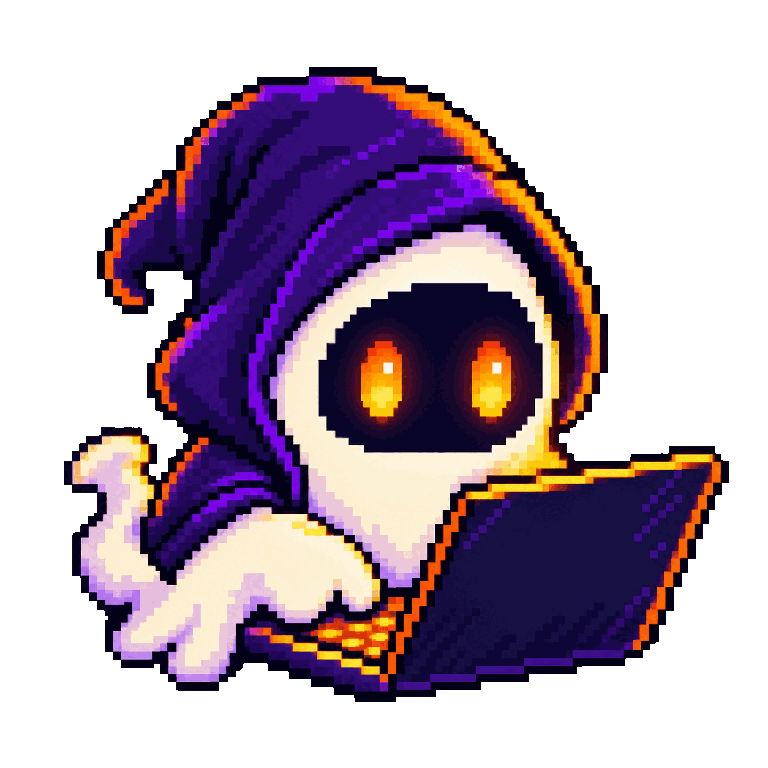
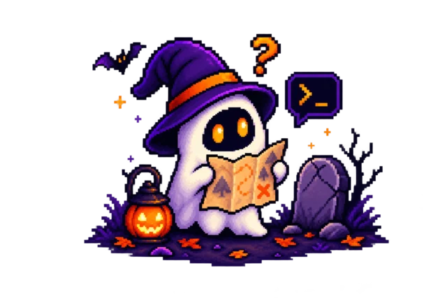
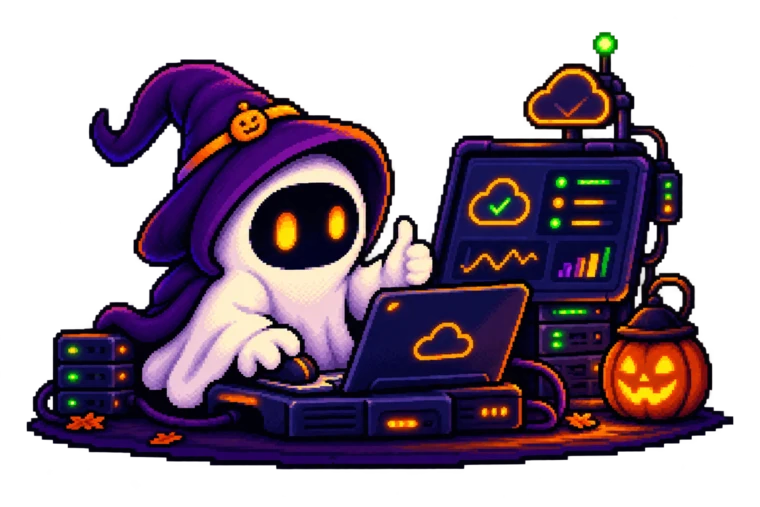
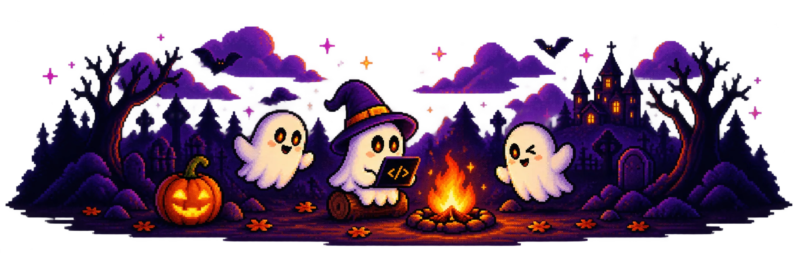

🎃 SpookyThon 2026 · Charla previa
Agentes de IA con Kiro + Gentle-AI
Llega a SpookyThon con ventaja: aprende a trabajar con agentes de IA de forma ordenada, no solo a pedirle código a un chat.
Miquel Muñiz Rivas · Domingo 18 de octubre · 19:00 · Virtual
Organiza · AWS Student Builder Group ULEAM
Sede · ULEAM · Manta
👋 Bienvenidos
¿Qué vamos a ver hoy?
¡Hola! Hoy armamos un plan juntos.

🤖¿Qué es un agente de IA?
Cómo trabaja y por qué necesita un plan.
🧭Kiro: del prompt al spec
Specs, steering, hooks, powers, skills y MCP.
🧙Gentle-AI sobre Kiro
ODD, SDD, TDD, RDD y memoria con Engram.
Y al final: una demo en vivo y un plan para tus tres días de SpookyThon. 🚀
🗺️ El problema
Un prompt suelto no alcanza para tres días
Improvisar con la IA sale caro: el contexto se pierde, el código crece sin que el equipo lo entienda y la demo se rompe justo antes del pitch.

🤖 Conceptos
¿Qué es un agente de IA?
No solo respondo. ¡También trabajo!
🎯Objetivo
Le cuentas qué resultado quieres.
📝Plan
Divide el trabajo en pasos.
⚡Acción
Lee, edita y ejecuta comandos.
🔍Revisión
Comprueba el resultado y repite.
Un agente recibe un objetivo y trabaja en ciclo sobre tu repositorio. Mientras mejor contexto le das, mejor trabaja.
1
Kiro
El IDE agéntico de AWS: pasa de un prompt a un plan que el agente puede seguir.
💸 Dato: Kiro lanza promociones de vez en cuando. Ejemplo de esta semana: Kiro Pro por $9,02 hasta el 31 de octubre; después, $20 al mes.

🧭 Kiro
Dos formas de trabajar
Primero juega, después construye.
💬Para explorarModo Vibe
Conversas y el agente escribe el código. Ideal para probar una idea o hacer un cambio pequeño.
📐Para construirModo Spec
Primero requisitos, diseño y tareas. Después el agente implementa tarea por tarea.
Para SpookyThon: explora en Vibe y construye en Spec.
📄 Antes del spec
Primero el PRD y el TRD
Si sé el qué y el cómo, no me pierdo.
🎯Documento de productoPRD
El qué y el para quién: problema, usuarios, funciones y qué queda fuera.
🛠️Documento técnicoTRD
El cómo: stack, arquitectura, datos, integraciones y límites técnicos.
📐Plan de trabajoSpec
Con los dos listos, el agente arma requisitos, diseño y tareas.
Una página de cada uno alcanza para un hackathon. Son el contexto que el agente necesita para no inventar.
📐 Kiro · Specs
Un spec son tres archivos
❓El quérequirements.md
Historias de usuario y criterios de aceptación en notación EARS.
🏗️El cómodesign.md
Arquitectura, componentes, datos y decisiones técnicas.
✅El ordentasks.md
Tareas pequeñas que el agente ejecuta una por una.
Revisas y corriges cada archivo antes de pasar al siguiente.
🧰 Kiro
La caja de herramientas
¡Con esto ya no trabajo a ciegas!
📌Steering
Archivos con tu producto, stack y estructura. El agente los lee siempre.
🪝Hooks
Automatizaciones que se disparan con eventos, como guardar un archivo.
🔌MCP
Conecta documentación, bases de datos y APIs externas.
✨Powers
Paquetes que suman conocimiento especializado cuando la tarea lo pide.
🎓Agent Skills
Instrucciones reutilizables que el agente carga según la tarea.
🚀Autopilot
El agente avanza solo, sin pedir aprobación en cada paso.
2
Gentle-AI
El ecosistema que le da al agente método, memoria y revisión.
🧙 Gentle-AI
¿Qué instala Gentle-AI?
Todo esto con un solo comando.
🌱ODD
El flujo de todos los días: explorar, anotar tareas e implementar una por una.
📜SDD
Desarrollo guiado por especificaciones, fase por fase.
🧪TDD
Primero el test que falla, después el código que lo pasa.
🧾RDD
Cuatro lentes revisan cada cambio antes de entregarlo.
🧠Engram
Memoria que sobrevive entre sesiones.
🎓Skills y subagentes
Guías reutilizables y un orquestador que reparte el trabajo.
Ejecutas gentle-ai, eliges tu agente (Kiro incluido) y queda todo listo.
📜 Gentle-AI · SDD y TDD
SDD: una fase, un entregable
Fase 1🔎 Explore
Investiga el código y compara caminos.
Fase 2💡 Propose
Intención, alcance y enfoque.
Fase 3📋 Spec
Requisitos y escenarios.
Fase 4🏗️ Design
Decisiones de arquitectura.
Fase 5🧩 Tasks
Lista ordenada de tareas.
Fase 6⚒️ Apply
Escribe el código siguiendo el spec.
Fase 7✅ Verify
Compara lo hecho con el spec.
Fase 8📦 Archive
Cierra el cambio y guarda el estado.
TDD acompaña cada tarea: 🔴 test que falla → 🟢 código que lo pasa → ✨ limpieza.
🌱 Gentle-AI · ODD
ODD: Organic Driven Development
1Autorizar
¿Me pidieron un cambio o solo investigar?
2Explorar
Leer el código antes de proponer.
3Aclarar
Una pregunta a la vez, si hay una duda real.
4Clasificar
¿Trabajo pequeño o grande?
5Anotar
Tareas en odd/tasks antes de escribir.
6Construir
Tarea por tarea, con test primero y un commit.
7Cerrar
Contar qué se verificó y qué falta.
Lo pequeño se queda pequeño. Lo grande deja una lista de tareas para retomar el trabajo si la sesión se corta. 💾
⚖️ Comparación
Spec, SDD y ODD: ¿cuál uso?
| 📐 Spec de Kiro | 📜 SDD de Gentle-AI | 🌱 ODD de Gentle-AI |
|---|
| Qué es | Un modo del IDE de Kiro | Un flujo formal de 8 fases | El flujo por defecto, liviano |
| Qué deja | requirements, design y tasks | Propuesta, spec, diseño, tareas y verificación | Una lista de tareas en odd/tasks |
| Quién trabaja | El agente de Kiro; tú apruebas cada archivo | Un subagente por fase | El orquestador; delega solo lo grande |
| Cuándo usarlo | Features dentro de Kiro | Cambios grandes que piden trazabilidad | El día a día: arreglos y cambios medianos |
No compiten: ODD para el día a día, SDD para lo grande y el Spec cuando trabajas dentro de Kiro.
🧠 Gentle-AI · Memoria
El contexto que no se pierde
¡Me acuerdo de lo que hicimos ayer!
🧠MemoriaEngram
Guarda decisiones, bugs y hallazgos. La siguiente sesión empieza sabiendo qué pasó en la anterior.
🎓ConocimientoSkills
Guías reutilizables en un registro. El agente carga solo las que la tarea necesita.
🕸️Mapa del códigoCodeGraph
Un grafo del repositorio: símbolos, llamadas y qué se rompe si cambias algo.
En un equipo de tres, nadie tiene que explicarle lo mismo al agente en cada sesión.
🧾 Gentle-AI · RDD
Cuatro lentes antes de entregar
Cuatro miradas ven más que una.
🛡️Riesgo
Seguridad, permisos y datos expuestos.
📖Legibilidad
Nombres claros y código simple.
🧪Fiabilidad
Tests, casos límite y regresiones.
🌧️Resiliencia
Qué pasa cuando algo falla.
La revisión pide tu permiso en cada cambio y admite una sola corrección. Tú decides cuándo se entrega.
¿Una decisión difícil? Judgment Day: dos jueces revisan a ciegas y solo se aplica lo que ambos confirman. ⚖️
🤝 Kiro + Gentle-AI
¿Cómo trabajan juntos?
| Momento | 🧭 Kiro | 🧙 Gentle-AI |
|---|
| Antes de programar | Spec: requisitos, diseño y tareas | ODD explora y anota las tareas |
| Mientras construyes | Ejecuta tareas y dispara hooks | TDD, skills y subagentes |
| Entre sesiones | Steering con el contexto fijo | Engram recuerda las decisiones |
| Antes de entregar | Revisas el cambio de cada tarea | Verifica contra el spec |
Kiro pone el IDE y el spec. Gentle-AI pone el método, la memoria y la disciplina.
🎬 Demo en vivo
Construyamos Termino
El tablero donde ves trabajar a tu agente: Kanban o Scrum en la terminal, hecho en Go, conectado por MCP y con un widget al abrir la terminal.
- Instalar Gentle-AI y elegir Kiro como agente.
- Partir del PRD y el TRD y generar el spec.
- Ejecutar las tareas y ver cómo avanzan.
termino · TER
Por hacer
Servidor MCPTER-3🤖 Kiro trabajando
WidgetTER-4🤖 Kiro trabajando
En progreso
Tablero en la TUITER-2🤖 Kiro trabajando
Hecho
Esquema SQLiteTER-1🤖 Kiro trabajando
🎃 SpookyThon 2026
Tu plan para los tres días
Trae tu laptop con Kiro instalado.
📐Lunes 26 de octubreDía 1: PRD, TRD y spec
Los retos salen a las 10:00. Define el qué y el cómo antes de escribir código.
⚒️Martes 27 de octubreDía 2: construcción
Una tarea a la vez, y cada avance en un commit.
✨Miércoles 28 de octubreDía 3: pulir y pitch
Prueba la demo completa y ensaya tu pitch de 5 minutos.
🎤 Pitch presencial: viernes 30 de octubre en la ULEAM, Manta.
📅 SpookyThon 2026
¿Qué sigue?
| Fecha | Qué pasa |
|---|
| 12 – 25 oct | 📝 Registro de equipos en la web, de 1 a 3 integrantes |
| Mié 21 oct | 🔐 Charla: Shift-left con IA · Willie Reyes |
| 26 – 28 oct | 💻 Desarrollo virtual |
| Vie 30 oct | 🎤 Pitch presencial en la ULEAM, Manta |
Regístrate: spookython-three.vercel.app · El registro en Meetup es obligatorio.
💜 Gracias
¡Gracias a nuestros sponsors!
Organiza · AWS Student Builder Group ULEAM
Sede · ULEAM · Manta

🦇🦇🦇